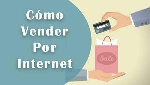
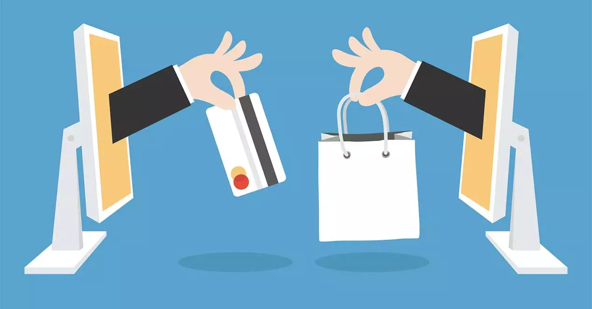

Consejos para vender en linea de manera segura

1.Elige los productos que vas a vender (ya sea de tu catálogo o desde cero)
2.Consulta los requisitos legales aplicables
3.Establece tu plan de negocios
4.Calcula el precio ideal para tus productos online
5.Crea tu sitio web para vender en línea
6.Crea contenido atractivo
7.Toma fotos cautivadoras de tus productos
Consejos para comprar en linea de manera segura

1. Utilizar una WI- FI o conexión a Internet segura
Aunque sea cómodo y fácil navegar y comprar conectado a redes de bares, centros comerciales o tiendas, lo cierto es que estas redes suelen ser poco seguras. Los paquetes de información transmitidos a través de las conexiones públicas pueden ser capturados fácilmente por hackers o ciberdelincuentes. Por este motivo, para realizar compras u operaciones en los que vayas a transferir información personal importante, te recomendamos que lo hagas a través de una red segura.
2. Mantén tu equipo actualizado y protegido
Realizar compras online es uno de los procesos en los que más información personal y peligrosa transferimos. Por ese motivo, antes de empezar a comprar asegúrate de tener tu equipo seguro, actualizado y de tener instalado un buen producto antivirus.
3. Compra en sitios web conocidos y con buena reputación
Buscando en la red la mejor oferta podemos llegar a sitios webs desconocidos y poco fiables. Aléjate de ellos. Comprueba que la url del sitio coincide con la web donde crees está y que su dirección empieza por https. Comprando en web fiables y de reconocida reputación online evitarás ser víctima del robo de datos o identidad.
4. Busca y revisa la política de privacidad y de devoluciones
Antes de comprar en una tienda online revisa que tienen su política de privacidad en un lugar visible y está actualizada. ¿Sabes qué tienes que hacer si tu regalo no es el adecuado? ¿Cómo puedes devolverlo? Estos también son aspectos a tener en cuenta a la hora de elegir dónde comprar.
5. Da solo los datos personales necesarios y hazlo de forma segura
Si te extraña que te pidan algún dato personal (móvil, nombre de familiares, lugar de naciemiento…) para efectuar la compra, no lo hagas y revisa que estás en el sitio correcto. Además, herramientas como el teclado virtual de Panda Security puede evitarte el robo de datos si tu ordenador está infectado por algún virus espía.
6. Evita los enlaces de correos y anuncios
La oferta que acabas de recibir al correo ¿es demasiado buena para ser verdad? Entonces, posiblemente no lo sea. En estas fechas, las campañas de anuncios y mails con ofertas y grandes descuentos son una herramienta muy utilizada por los ciberdelincuentes. Evita el phishing.
7. Revisa periódicamente los movimientos de tu tarjeta de crédito
Después de hacer varias compras online, revisa que todos los cargos de tu cuenta son conocidos y los tienes controlados. Si alguno te resulta sospechoso, ponte en contacto con tu banco, quizás hayas sido víctima de un robo de identidad.